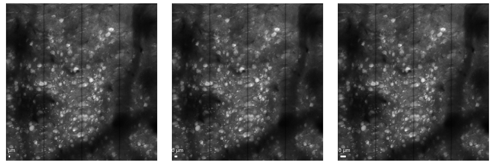
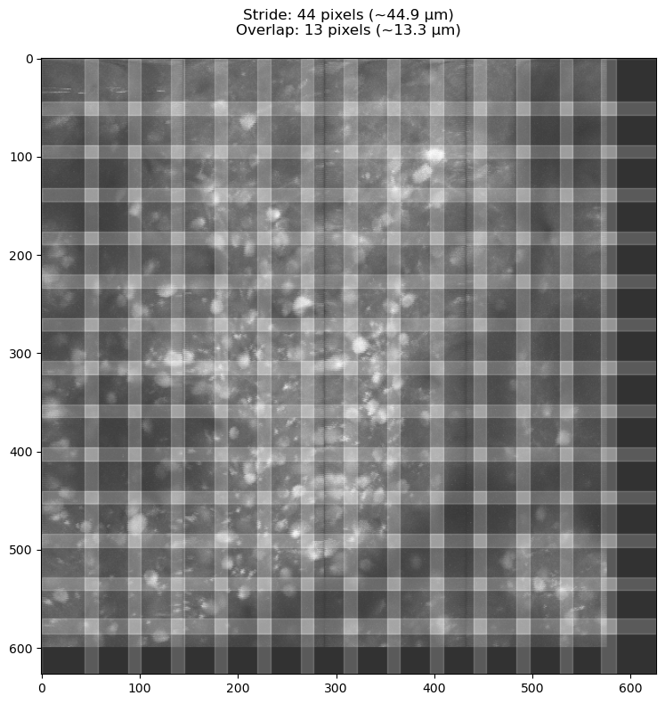
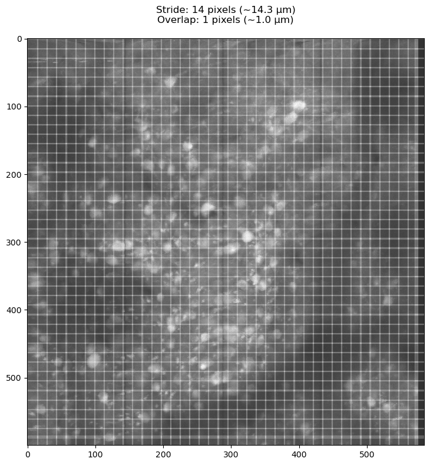
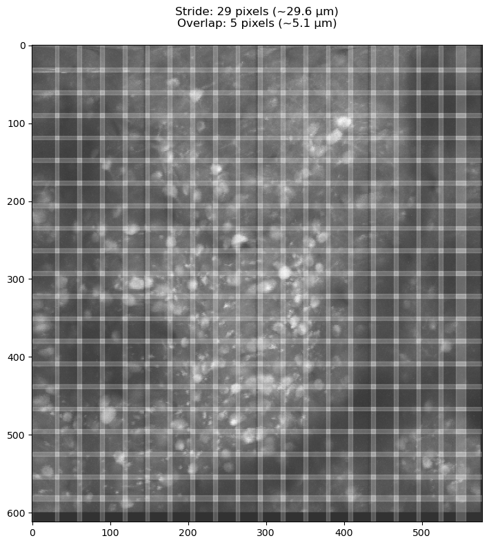
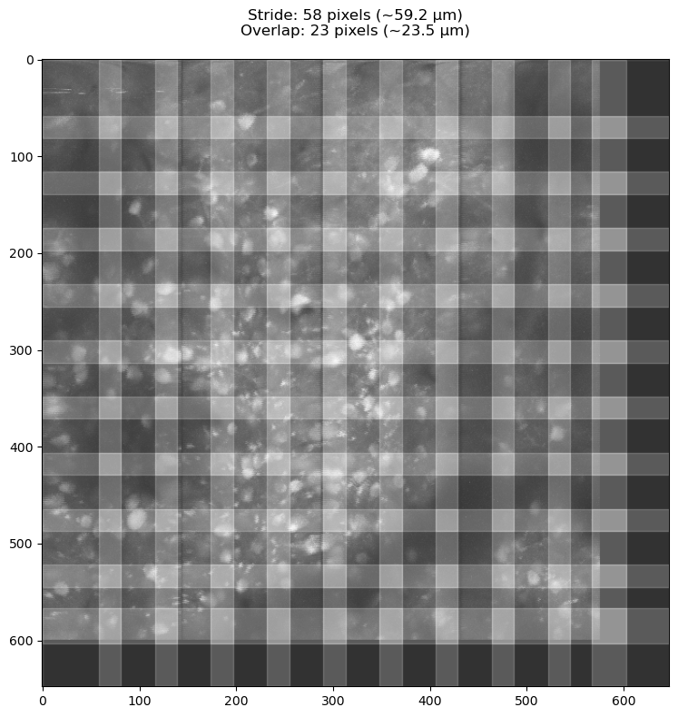
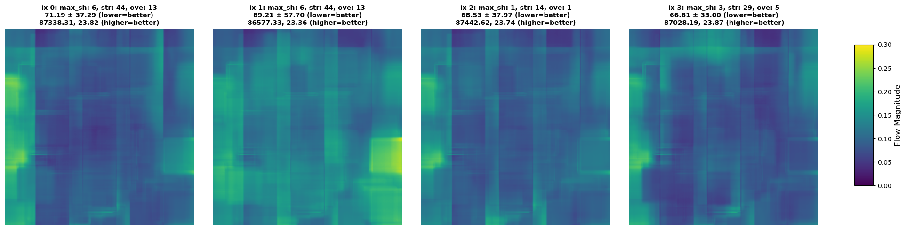
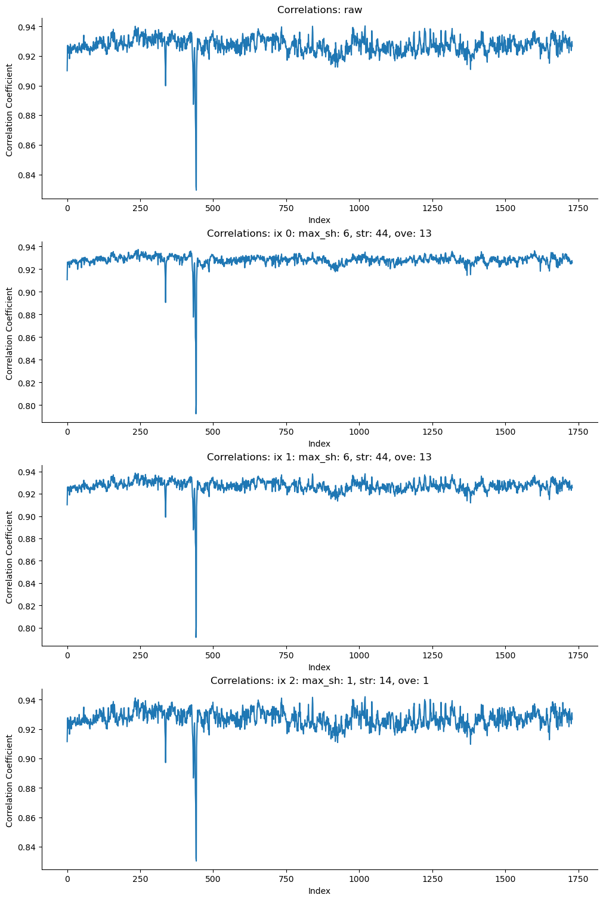
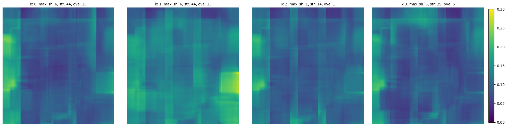

Registration#
Correct for rigid/non-rigid movement
Apply the nonrigid motion correction (NoRMCorre) algorithm for motion correction.
View pre/most correction movie
Use quality metrics to evaluate registration quality
# Imports
%load_ext autoreload
%autoreload 2
from pathlib import Path
import os
import pandas as pd
import mesmerize_core as mc
import numpy as np
import tifffile
from matplotlib import pyplot as plt
import fastplotlib as fpl
from mesmerize_core.caiman_extensions.cnmf import cnmf_cache
import lbm_caiman_python as lcp
if os.name == "nt":
# disable the cache on windows, this will be automatic in a future version
cnmf_cache.set_maxsize(0)
import matplotlib as mpl
mpl.rcParams.update({
'axes.spines.left': True,
'axes.spines.bottom': True,
'axes.spines.top': False,
'axes.spines.right': False,
'legend.frameon': False,
'figure.subplot.wspace': .01,
'figure.subplot.hspace': .01,
'figure.figsize': (12, 8),
'ytick.major.left': True,
})
jet = mpl.colormaps['jet']
jet.set_bad(color='k')
pd.options.display.max_colwidth = 120
The autoreload extension is already loaded. To reload it, use:
%reload_ext autoreload
(optional): View hardware information#
!pip install cloudmesh-cmd5
!cms help # dont forget to call it after the install as it sets some defaults
!cms sysinfo
Requirement already satisfied: cloudmesh-cmd5 in c:\users\rbo\miniforge3\envs\lcp\lib\site-packages (5.0.20)
Requirement already satisfied: toml in c:\users\rbo\miniforge3\envs\lcp\lib\site-packages (from cloudmesh-cmd5) (0.10.2)
Requirement already satisfied: cloudmesh-common in c:\users\rbo\miniforge3\envs\lcp\lib\site-packages (from cloudmesh-cmd5) (5.0.60)
Requirement already satisfied: pyyaml in c:\users\rbo\miniforge3\envs\lcp\lib\site-packages (from cloudmesh-cmd5) (6.0.2)
Requirement already satisfied: docopt in c:\users\rbo\miniforge3\envs\lcp\lib\site-packages (from cloudmesh-cmd5) (0.6.2)
Requirement already satisfied: requests in c:\users\rbo\miniforge3\envs\lcp\lib\site-packages (from cloudmesh-cmd5) (2.32.3)
Requirement already satisfied: md-toc in c:\users\rbo\miniforge3\envs\lcp\lib\site-packages (from cloudmesh-cmd5) (9.0.0)
Requirement already satisfied: python-dateutil in c:\users\rbo\miniforge3\envs\lcp\lib\site-packages (from cloudmesh-common->cloudmesh-cmd5) (2.9.0.post0)
Requirement already satisfied: rich in c:\users\rbo\miniforge3\envs\lcp\lib\site-packages (from cloudmesh-common->cloudmesh-cmd5) (13.9.4)
Requirement already satisfied: humanize in c:\users\rbo\miniforge3\envs\lcp\lib\site-packages (from cloudmesh-common->cloudmesh-cmd5) (4.11.0)
Requirement already satisfied: oyaml in c:\users\rbo\miniforge3\envs\lcp\lib\site-packages (from cloudmesh-common->cloudmesh-cmd5) (1.0)
Requirement already satisfied: pyfiglet in c:\users\rbo\miniforge3\envs\lcp\lib\site-packages (from cloudmesh-common->cloudmesh-cmd5) (1.0.2)
Requirement already satisfied: python-hostlist in c:\users\rbo\miniforge3\envs\lcp\lib\site-packages (from cloudmesh-common->cloudmesh-cmd5) (2.2.1)
Requirement already satisfied: simplejson in c:\users\rbo\miniforge3\envs\lcp\lib\site-packages (from cloudmesh-common->cloudmesh-cmd5) (3.19.3)
Requirement already satisfied: tabulate in c:\users\rbo\miniforge3\envs\lcp\lib\site-packages (from cloudmesh-common->cloudmesh-cmd5) (0.9.0)
Requirement already satisfied: tqdm in c:\users\rbo\miniforge3\envs\lcp\lib\site-packages (from cloudmesh-common->cloudmesh-cmd5) (4.67.0)
Requirement already satisfied: psutil in c:\users\rbo\miniforge3\envs\lcp\lib\site-packages (from cloudmesh-common->cloudmesh-cmd5) (6.1.0)
Requirement already satisfied: tzlocal in c:\users\rbo\miniforge3\envs\lcp\lib\site-packages (from cloudmesh-common->cloudmesh-cmd5) (5.2)
Requirement already satisfied: pywin32 in c:\users\rbo\miniforge3\envs\lcp\lib\site-packages (from cloudmesh-common->cloudmesh-cmd5) (307)
Requirement already satisfied: pyuac in c:\users\rbo\miniforge3\envs\lcp\lib\site-packages (from cloudmesh-common->cloudmesh-cmd5) (0.0.3)
Requirement already satisfied: fpyutils<5,>=4.0.1 in c:\users\rbo\miniforge3\envs\lcp\lib\site-packages (from md-toc->cloudmesh-cmd5) (4.0.1)
Requirement already satisfied: charset-normalizer<4,>=2 in c:\users\rbo\miniforge3\envs\lcp\lib\site-packages (from requests->cloudmesh-cmd5) (3.4.0)
Requirement already satisfied: idna<4,>=2.5 in c:\users\rbo\miniforge3\envs\lcp\lib\site-packages (from requests->cloudmesh-cmd5) (3.10)
Requirement already satisfied: urllib3<3,>=1.21.1 in c:\users\rbo\miniforge3\envs\lcp\lib\site-packages (from requests->cloudmesh-cmd5) (2.2.3)
Requirement already satisfied: certifi>=2017.4.17 in c:\users\rbo\miniforge3\envs\lcp\lib\site-packages (from requests->cloudmesh-cmd5) (2024.8.30)
Requirement already satisfied: six>=1.5 in c:\users\rbo\miniforge3\envs\lcp\lib\site-packages (from python-dateutil->cloudmesh-common->cloudmesh-cmd5) (1.16.0)
Requirement already satisfied: tee in c:\users\rbo\miniforge3\envs\lcp\lib\site-packages (from pyuac->cloudmesh-common->cloudmesh-cmd5) (0.0.3)
Requirement already satisfied: decorator in c:\users\rbo\miniforge3\envs\lcp\lib\site-packages (from pyuac->cloudmesh-common->cloudmesh-cmd5) (5.1.1)
Requirement already satisfied: markdown-it-py>=2.2.0 in c:\users\rbo\miniforge3\envs\lcp\lib\site-packages (from rich->cloudmesh-common->cloudmesh-cmd5) (3.0.0)
Requirement already satisfied: pygments<3.0.0,>=2.13.0 in c:\users\rbo\miniforge3\envs\lcp\lib\site-packages (from rich->cloudmesh-common->cloudmesh-cmd5) (2.18.0)
Requirement already satisfied: typing-extensions<5.0,>=4.0.0 in c:\users\rbo\miniforge3\envs\lcp\lib\site-packages (from rich->cloudmesh-common->cloudmesh-cmd5) (4.12.2)
Requirement already satisfied: colorama in c:\users\rbo\miniforge3\envs\lcp\lib\site-packages (from tqdm->cloudmesh-common->cloudmesh-cmd5) (0.4.6)
Requirement already satisfied: tzdata in c:\users\rbo\miniforge3\envs\lcp\lib\site-packages (from tzlocal->cloudmesh-common->cloudmesh-cmd5) (2024.2)
Requirement already satisfied: mdurl~=0.1 in c:\users\rbo\miniforge3\envs\lcp\lib\site-packages (from markdown-it-py>=2.2.0->rich->cloudmesh-common->cloudmesh-cmd5) (0.1.2)
*** No help on # dont forget to call it after the install as it sets some defaults
+------------------+----------------------------------------------------------------------------------------------+
| Attribute | Value |
+------------------+----------------------------------------------------------------------------------------------+
| cpu | |
| cpu_cores | 24 |
| cpu_count | 32 |
| cpu_threads | 32 |
| date | 2024-12-09 17:10:54.386633 |
| frequency | scpufreq(current=3200.0, min=0.0, max=3200.0) |
| mem.available | 105.7 GiB |
| mem.free | 105.7 GiB |
| mem.percent | 17.3 % |
| mem.total | 127.8 GiB |
| mem.used | 22.1 GiB |
| platform.version | ('10', '10.0.19045', 'SP0', 'Multiprocessor Free') |
| python | 3.10.8 | packaged by conda-forge | (main, Nov 22 2022, 08:16:53) [MSC v.1929 64 bit (AMD64)] |
| python.pip | 24.3.1 |
| python.version | 3.10.8 |
| sys.platform | win32 |
| uname.machine | AMD64 |
| uname.node | RBO-C2 |
| uname.processor | Intel64 Family 6 Model 183 Stepping 1, GenuineIntel |
| uname.release | 10 |
| uname.system | Windows |
| uname.version | 10.0.19045 |
| user | RBO |
+------------------+----------------------------------------------------------------------------------------------+
Data path setup#
We set 2 path variables:
data_path: input, path where you saved the output from the assembly stepbatch_path: results, can be anywhere you please, must end in .pickle
Note
This notebook assumes you saved scans as TIFF with join_contiguous=True so filenames are plane_N.tiff
The process for join_contiguous=False is the same, but with the roi attached to the filename plane_N_roi_M.
To simplify data management, we put our batch_path (which stores results) in the same directory as our raw data.
parent_path = Path().home() / "caiman_data"
data_path = parent_path / 'out' # where the output files from the assembly step are located
batch_path = data_path / 'batch_v2.pickle'
tiff_files = [x for x in Path(data_path).glob('*.tif*')]
tiff_files
[WindowsPath('C:/Users/RBO/caiman_data/out/plane_1.tiff'),
WindowsPath('C:/Users/RBO/caiman_data/out/plane_10.tiff'),
WindowsPath('C:/Users/RBO/caiman_data/out/plane_11.tiff'),
WindowsPath('C:/Users/RBO/caiman_data/out/plane_12.tiff'),
WindowsPath('C:/Users/RBO/caiman_data/out/plane_13.tiff'),
WindowsPath('C:/Users/RBO/caiman_data/out/plane_14.tiff'),
WindowsPath('C:/Users/RBO/caiman_data/out/plane_15.tiff'),
WindowsPath('C:/Users/RBO/caiman_data/out/plane_16.tiff'),
WindowsPath('C:/Users/RBO/caiman_data/out/plane_17.tiff'),
WindowsPath('C:/Users/RBO/caiman_data/out/plane_18.tiff'),
WindowsPath('C:/Users/RBO/caiman_data/out/plane_19.tiff'),
WindowsPath('C:/Users/RBO/caiman_data/out/plane_2.tiff'),
WindowsPath('C:/Users/RBO/caiman_data/out/plane_20.tiff'),
WindowsPath('C:/Users/RBO/caiman_data/out/plane_21.tiff'),
WindowsPath('C:/Users/RBO/caiman_data/out/plane_22.tiff'),
WindowsPath('C:/Users/RBO/caiman_data/out/plane_23.tiff'),
WindowsPath('C:/Users/RBO/caiman_data/out/plane_24.tiff'),
WindowsPath('C:/Users/RBO/caiman_data/out/plane_25.tiff'),
WindowsPath('C:/Users/RBO/caiman_data/out/plane_26.tiff'),
WindowsPath('C:/Users/RBO/caiman_data/out/plane_27.tiff'),
WindowsPath('C:/Users/RBO/caiman_data/out/plane_28.tiff'),
WindowsPath('C:/Users/RBO/caiman_data/out/plane_29.tiff'),
WindowsPath('C:/Users/RBO/caiman_data/out/plane_3.tiff'),
WindowsPath('C:/Users/RBO/caiman_data/out/plane_30.tiff'),
WindowsPath('C:/Users/RBO/caiman_data/out/plane_4.tiff'),
WindowsPath('C:/Users/RBO/caiman_data/out/plane_5.tiff'),
WindowsPath('C:/Users/RBO/caiman_data/out/plane_6.tiff'),
WindowsPath('C:/Users/RBO/caiman_data/out/plane_7.tiff'),
WindowsPath('C:/Users/RBO/caiman_data/out/plane_8.tiff'),
WindowsPath('C:/Users/RBO/caiman_data/out/plane_9.tiff')]
Load a data file to examine#
file = tiff_files[1]
data = tifffile.imread(file)
data.shape
(1730, 600, 576)
View metadata#
lcp.get_metadata(filepath) works on raw scanimage files and files processed through lcp.save_as()
metadata = lcp.get_metadata(file)
metadata
{'image_height': 2478,
'image_width': 145,
'num_pages': 51900,
'ndim': 3,
'dtype': 'uint16',
'size': 18648189000,
'shape': [51900, 2478, 145],
'num_planes': 30,
'num_rois': 4,
'num_frames': 1730.0,
'frame_rate': 9.60806,
'fov': [150, 600],
'pixel_resolution': [1.04, 1.0],
'roi_width_px': 144,
'roi_height_px': 600,
'sample_format': 'int16',
'num_lines_between_scanfields': 24,
'center_xy': [-1.428571429, 0],
'line_period': 4.15652e-05,
'size_xy': [0.9523809524, 3.80952381],
'objective_resolution': 157.5}
dxy = metadata['pixel_resolution']
print(f"Pixel resolution: {dxy[0]} um/px, {dxy[1]} um/px")
Pixel resolution: 1.04 um/px, 1.0 um/px
# note this is only for a single ROI
fov = metadata['fov']
print(f"Field of View: {fov[0]}px, {fov[1]}px")
Field of View: 150px, 600px
fr = metadata['frame_rate']
print(f"Frame rate: {fr} Hz")
Frame rate: 9.60806 Hz
Registration parameters#
Parameter |
Description |
Value/Default |
|---|---|---|
|
Spatial resolution (pixel size in micrometers). |
|
|
Frame rate of the video (frames per second). |
|
|
Maximum allowed rigid shift in pixels for motion correction. |
|
|
Size of patches for motion correction. |
|
|
Overlap between patches for motion correction. |
|
|
Maximum allowed deviation for patches relative to rigid shifts. |
|
|
How to handle border values during motion correction. |
|
|
Flag indicating whether to perform piecewise rigid motion correction. |
|
|
Size of the Gaussian filter for smoothing the motion correction process. |
|
|
Flag to use bicubic interpolation for motion correction. |
|
The parameters are passed directly to caiman, this means you need to use the same exact names for the parameters and you can use all the parameters that you can use with caiman - because it’s just passing them to caiman.
The parameters dict for a mesmerize batch item must have the following structure. Put all the parameters in a dict under a key called main. The main dict is then fed directly to caiman.
{"main": {... params directly passed to caiman}}
Using metadata to assign parameter values#
Important
The goal here is to get an approximate neuron size in microns.
This value is used as the basis of the patch and max_shifts parameters.
plot_data_with_scalebars will give you 3 images, at 5, 10 and 20 um.
You can use any summary images:
# a single frame
plot_with_scalebars(data[0, :, :], np.mean(dxy))
# mean projection image
plot_with_scalebars(np.mean(data, axis=0), np.mean(dxy))
# maximum projection image
plot_with_scalebars(np.max(data, axis=0), np.mean(dxy))
from lbm_caiman_python import plot_with_scalebars
# plot_with_scalebars(data[0, :, :], np.mean(dxy))
plot_with_scalebars(np.max(data, axis=0), np.mean(dxy))

Scaling patches relative to neuron size#
The generate_patch_view function divides the image into patches the same way CaImAn will do internally.
Increasing / decreasing the target_patch_size and overlap_fraction parameters to examine the effect of different stride/overlap values displayed in the title.
Tip
We want each patch to have “landmarks” (neurons) to use for alignment, so we want at least a few full neurons for each patch.
For this reason, we use the neuron_size * scale_factor as our target_patch_size.
We want to avoid neurons occupying the inner regions of multiple neighboring patches.
neuron_size = 15 # in micron
# - value of 1 makes patches ~neuron sized
# - value of 2 makes patches ~2x neuron sized
# - the larger your neurons, the larger you want to make this number
scale_factor = 3 # must be > 0
overlap_fraction = 0.3 # 30% of the patch size will be overlap
from lbm_caiman_python import generate_patch_view
target_patch_size=neuron_size*scale_factor
# this function assumes a square pixel resolution, so take the mean
fig, ax, stride_px, overlap_px = generate_patch_view(np.max(data, axis=0), pixel_resolution=np.mean(dxy), target_patch_size=target_patch_size, overlap_fraction=overlap_fraction)
plt.show()

print(f'stride : {stride_px}px\noverlap: {overlap_px}px')
stride : 44px
overlap: 13px
# From the above image, we get our overlaps/strides parameters
# This is in *pixels*, not microns
strides = [stride_px, stride_px]
overlaps = [overlap_px, overlap_px]
Create the parameters we pass to CaImAn#
The above patch view looks good, so we use those values in our parameters dictionary.
You can also include segmentation parameters in this dictionary if you wish. This is not recommmended as several parameters share similar names yet perform different actions. i.e:
strideandgSig_filtparameters are for registrationstridesforgSigare parameters for segmentation
Note
We want our parameters to physically make sense.
max_shifts controls the maximum number of pixels that each individual patch can be shifted.
We don’t want to shift any patches more than a full overlap which would introduce artifacts into neighboring patches.
max_shifts = (int(overlaps[0] / 2), int(overlaps[0] / 2)) # maximum allowed rigid shift in pixels
max_deviation_rigid = 3 # maximum deviation allowed for patch with respect to rigid shifts
pw_rigid = True # flag for performing rigid or piecewise rigid motion correction
shifts_opencv = True # flag for correcting motion using bicubic interpolation (otherwise FFT interpolation is used)
border_nan = 'copy' # replicate values along the boundary (if True, fill in with NaN)
mcorr_params = {
'main': # this key is necessary for specifying that these are the "main" params for the algorithm
{
'dxy': dxy,
'fr': fr,
'max_shifts': max_shifts, # make sure its a tuple/list of integers
'strides': strides,
'overlaps': overlaps,
'max_deviation_rigid': 3,
'border_nan':border_nan,
'pw_rigid': pw_rigid,
'gSig_filt': (3, 3),
},
}
Run registration with mesmerize-core#
See the mesmerize-core utility docs for more information on batch creation.
Create or load a batch set#
Warning
In the below if-else clause, be careful if you expect a batch to exist, a typo can be deceiving!
# Create or load a batch results file
# To overwrite:
# df = mc.create_batch(batch_path, remove_existing=True)
if not batch_path.exists():
print(f'creating batch: {batch_path}')
df = mc.create_batch(batch_path)
else:
df = mc.load_batch(batch_path)
# tell mesmerize where the raw data is
mc.set_parent_raw_data_path(data_path)
df
Add an item to the batch#
A “batch item” consists of:
algorithm to run,
algocurrently: mcorr, cnmf, cnmfe
input movie to run the algorithm on,
input_movie_pathcan be string or dataframe row
parameters for the specified algorithm,
paramsa name for you to keep track of things
item_namecan be anything
df.caiman.add_item(
algo='mcorr',
input_movie_path=file,
params=mcorr_params,
item_name='mcorr',
)
df
| algo | item_name | input_movie_path | params | outputs | added_time | ran_time | algo_duration | comments | uuid | |
|---|---|---|---|---|---|---|---|---|---|---|
| 0 | mcorr | mcorr | plane_10.tiff | {'main': {'dxy': (1.04, 1.0), 'fr': 9.60806, 'max_shifts': (6, 6), 'strides': (44, 44), 'overlaps': (13, 13), 'max_d... | None | 2024-12-09T17:18:15 | None | None | None | 790b1747-10dd-498f-a11b-dbc267b5c1fd |
First registration run#
Note
On Linux & Mac it will run in subprocess but on Windows it will run in the local kernel. For this reason, on windows you need to reload the dataframe:
df=df.caiman.reload_from_disk()
df
If you ever get errors like
TypeError: NoneType is not subscriptable
This likely means you need to reload the dataframe.
Warning
On windows, df.iloc[i].caiman.run() will sometimes stall if you run additional cells before it completes.
df.iloc[0].caiman.run()
Running 790b1747-10dd-498f-a11b-dbc267b5c1fd with local backend
starting mc
C:\Users\RBO\miniforge3\envs\lcp\lib\site-packages\caiman\cluster.py:225: DeprecationWarning: The 'warn' method is deprecated, use 'warning' instead
logger.warn('The local backend is an alias for the multiprocessing backend, and the alias may be removed in some future version of Caiman')
The local backend is an alias for the multiprocessing backend, and the alias may be removed in some future version of Caiman
In setting CNMFParams, non-pathed parameters were used; this is deprecated. In some future version of Caiman, allow_legacy will default to False (and eventually will be removed)
Movie average is negative. Removing 1st percentile.
Movie average is negative. Removing 1st percentile.
Movie average is negative. Removing 1st percentile.
Movie average is negative. Removing 1st percentile.
Movie average is negative. Removing 1st percentile.
Movie average is negative. Removing 1st percentile.
mc finished successfully!
computing projections
Computing correlation image
finished computing correlation image
<mesmerize_core.caiman_extensions.common.DummyProcess at 0x1828a95be80>
df=df.caiman.reload_from_disk()
df
| algo | item_name | input_movie_path | params | outputs | added_time | ran_time | algo_duration | comments | uuid | |
|---|---|---|---|---|---|---|---|---|---|---|
| 0 | mcorr | mcorr | plane_10.tiff | {'main': {'dxy': (1.04, 1.0), 'fr': 9.60806, 'max_shifts': (6, 6), 'strides': (44, 44), 'overlaps': (13, 13), 'max_d... | {'mean-projection-path': 790b1747-10dd-498f-a11b-dbc267b5c1fd\790b1747-10dd-498f-a11b-dbc267b5c1fd_mean_projection.n... | 2024-12-09T17:18:15 | 2024-12-09T17:19:47 | 79.33 sec | None | 790b1747-10dd-498f-a11b-dbc267b5c1fd |
Check for errors in outputs#
In the table header outputs, you should see
{'mean-projection-path': ...}
If you see instead:
{'success': False, ...}
Run the below cell to evaluate the error message.
import pprint
pprint.pprint(df.iloc[0].outputs["traceback"])
None
Evaluate motion correction outputs with mesmerize-core API#
mesmerize-core offers an easy API to retrieve results from the batch dataframe.
# get the motion corrected movie memmap
mcorr_movie = df.iloc[0].mcorr.get_output()
# the input movie, note that we use `.caiman` here instead of `.mcorr`
input_movie = df.iloc[0].caiman.get_input_movie()
Side-by-side with fastplotlib#
Its helpful to zoom into specific locations of your images to see improvements.
mcorr_iw = fpl.ImageWidget(
data=[input_movie, mcorr_movie],
names=['raw', 'registered'],
cmap="gnuplot2",
window_funcs={"t": (np.mean, 3)}, # window functions, can change to np.max, np.std, anything that operates on a timeseries
figure_kwargs={"size": (900, 560)},
histogram_widget=False, # helps keep plots close together
)
mcorr_iw.show()
mcorr_iw.close()
Define parameter varients#
If you still see non-rigid motion in your movie, we can try increasing the scale_factor to increase our patch-size or decrease it.
More than likely you will want to decrease the scale factor to process more patches.
The patched graphs displayed show you what patches each of your movie will use.
from copy import deepcopy
for scale in (1, 2, 4): # we started with a scale of 3
target_patch_size=neuron_size*scale
overlap_fraction = .3 # keep overlap to 30% of patch size
_, _, stride_px, overlap_px = generate_patch_view(np.max(data, axis=0), pixel_resolution=np.mean(dxy), target_patch_size=target_patch_size, overlap_fraction=overlap_fraction)
# deep copy is the safest way to copy dicts
new_params = deepcopy(mcorr_params)
new_shift = int(np.ceil(overlap_px / 2))
new_stride = int(np.ceil(stride_px))
new_overlap = int(np.ceil(overlap_px))
new_params["main"]["max_shifts"] = (new_shift, new_shift)
new_params["main"]["strides"] = (new_stride, new_stride)
new_params["main"]["overlaps"] = (new_overlap, new_overlap)
df.caiman.add_item(
algo='mcorr',
input_movie_path=file,
params=new_params,
item_name='mcorr', # filename of the movie, but can be anything
)



Tip
We can use the caiman.get_params_diffs() to see the unique parameters between rows with the same item_name.
This shows the parameters that differ between our batch items.
diffs = df.caiman.get_params_diffs(algo="mcorr", item_name=df.iloc[0]["item_name"])
diffs
| strides | overlaps | max_shifts | |
|---|---|---|---|
| 0 | (44, 44) | (13, 13) | (6, 6) |
| 1 | (14, 14) | (1, 1) | (1, 1) |
| 2 | (29, 29) | (5, 5) | (3, 3) |
| 3 | (58, 58) | (23, 23) | (12, 12) |
(Optional) Use your own grid-search values.#
For example:
from copy import deepcopy
for shifts in [2,32]:
for strides in [12,64]:
overlaps = int(strides / 2)
# deep copy is the safest way to copy dicts
new_params = deepcopy(mcorr_params)
# assign the "max_shifts"
new_params["main"]["pw_rigid"] = True
new_params["main"]["max_shifts"] = (shifts, shifts)
new_params["main"]["strides"] = (strides, strides)
new_params["main"]["overlaps"] = (overlaps, overlaps)
df.caiman.add_item(
algo='mcorr',
input_movie_path=file,
params=new_params,
item_name='mcorr', # filename of the movie, but can be anything
)
df.caiman.reload_from_disk()
Use the varients to organize results to run multiple batch items.#
df.iterrows() iterates through rows and returns the numerical index and row for each iteration
for i, row in df.iterrows():
if row["outputs"] is not None: # item has already been run
continue # skip
process = row.caiman.run()
# on Windows you MUST reload the batch dataframe after every iteration because it uses the `local` backend.
# this is unnecessary on Linux & Mac
# "DummyProcess" is used for local backend so this is automatic
if process.__class__.__name__ == "DummyProcess":
df = df.caiman.reload_from_disk()
Running 8c1d98d9-57a1-414f-a046-b678cc7a8410 with local backend
starting mc
C:\Users\RBO\miniforge3\envs\lcp\lib\site-packages\caiman\cluster.py:225: DeprecationWarning: The 'warn' method is deprecated, use 'warning' instead
logger.warn('The local backend is an alias for the multiprocessing backend, and the alias may be removed in some future version of Caiman')
The local backend is an alias for the multiprocessing backend, and the alias may be removed in some future version of Caiman
In setting CNMFParams, non-pathed parameters were used; this is deprecated. In some future version of Caiman, allow_legacy will default to False (and eventually will be removed)
Movie average is negative. Removing 1st percentile.
Movie average is negative. Removing 1st percentile.
Movie average is negative. Removing 1st percentile.
Movie average is negative. Removing 1st percentile.
Movie average is negative. Removing 1st percentile.
Movie average is negative. Removing 1st percentile.
mc finished successfully!
computing projections
Computing correlation image
finished computing correlation image
Running 5c844e2a-924b-469f-87b4-fd81db666020 with local backend
starting mc
C:\Users\RBO\miniforge3\envs\lcp\lib\site-packages\caiman\cluster.py:225: DeprecationWarning: The 'warn' method is deprecated, use 'warning' instead
logger.warn('The local backend is an alias for the multiprocessing backend, and the alias may be removed in some future version of Caiman')
The local backend is an alias for the multiprocessing backend, and the alias may be removed in some future version of Caiman
In setting CNMFParams, non-pathed parameters were used; this is deprecated. In some future version of Caiman, allow_legacy will default to False (and eventually will be removed)
Movie average is negative. Removing 1st percentile.
Movie average is negative. Removing 1st percentile.
Movie average is negative. Removing 1st percentile.
Movie average is negative. Removing 1st percentile.
Movie average is negative. Removing 1st percentile.
Movie average is negative. Removing 1st percentile.
mc finished successfully!
computing projections
Computing correlation image
finished computing correlation image
Running d7a55f83-6d9d-40e1-9e43-25a39a7a5c69 with local backend
starting mc
C:\Users\RBO\miniforge3\envs\lcp\lib\site-packages\caiman\cluster.py:225: DeprecationWarning: The 'warn' method is deprecated, use 'warning' instead
logger.warn('The local backend is an alias for the multiprocessing backend, and the alias may be removed in some future version of Caiman')
The local backend is an alias for the multiprocessing backend, and the alias may be removed in some future version of Caiman
In setting CNMFParams, non-pathed parameters were used; this is deprecated. In some future version of Caiman, allow_legacy will default to False (and eventually will be removed)
Movie average is negative. Removing 1st percentile.
Movie average is negative. Removing 1st percentile.
Movie average is negative. Removing 1st percentile.
Movie average is negative. Removing 1st percentile.
Movie average is negative. Removing 1st percentile.
Movie average is negative. Removing 1st percentile.
mc finished successfully!
computing projections
Computing correlation image
finished computing correlation image
# make sure everything works properly
# check for outputs {'success': False, ...
df = df.caiman.reload_from_disk()
df
Calculate registration metrics#
The first cell iterates over our batch dataframe and collects several metrics to help distinguish which parameter varients lead to the best registration results.
import pandas as pd
from caiman.motion_correction import compute_metrics_motion_correction
# downsampling in time to help with memory efficiency and can make visualizing movement easier
downsample_factor = 2
subplot_names = []
shifts = []
movies = [df.iloc[0].caiman.get_input_movie()[::downsample_factor, ...]]
subplot_names.append("raw")
# registration metrics parameters
winsize = 100
swap_dim = False # True if your data is X,Y,T, which it should **not** be
resize_fact_flow = 0.2
final_size = data.shape[1:]
metrics_list = []
# get the param diffs to set plot titles
param_diffs = df.caiman.get_params_diffs("mcorr", item_name=df.iloc[0]["item_name"])
print('Computing registration metrics and combining results. This can take time.')
# add all the mcorr outputs to the list
for i, row in df.iterrows():
if row.algo != 'mcorr':
continue
input_path = row.mcorr.get_output_path()
print(f'Computing registration metrics for row {i}.')
template, correlations, flows, norms, crispness = compute_metrics_motion_correction(
input_path, final_size[0], final_size[1], swap_dim=swap_dim
)
# subplot title to show dataframe index
subplot_names.append(f"ix {i}: max_sh: {max_shifts}, str: {strides}, ove: {overlaps}")
movies.append(row.mcorr.get_output()[::downsample_factor, ...])
max_shifts = param_diffs.iloc[i]["max_shifts"][0]
strides = param_diffs.iloc[i]["strides"][0]
overlaps = param_diffs.iloc[i]["overlaps"][0]
metrics_list.append({
'index': i,
'template': template,
'correlations': correlations,
'flows': flows,
'norms': norms,
'crispness': crispness
})
# store our results into a nice dataframe for display / access
metrics_df = pd.DataFrame(metrics_list)
computing registration metrics... this can take a significant amount of time.
computing registration metrics... this can take a significant amount of time.
computing registration metrics... this can take a significant amount of time.
computing registration metrics... this can take a significant amount of time.
Optical Flow#
Optical flow measures the movement of a pixel between two consecutive frames.

Movement is illustrated as a brihter values, with the hue (color) illustrating the direction of movement.
We also calculate smoothness and crispness of our summary “mean” image, which is displayed in the title.
You are looking for lower values of smoothness (middle row) and higher values of crispness (bottom row).
import caiman as cm
# generate the list of files dynamically from the dataframe
fls = []
# TODO: there is probably a much better way to organize this
for i in range(len(df)):
mmap_path = Path(df.iloc[i].mcorr.get_output_path())
parent_dir = mmap_path.parent
base_filename = mmap_path.name
metrics_filename = base_filename.replace('.mmap', '_metrics.npz')
full_metrics_path = parent_dir / metrics_filename
fls.append({'metrics_path': full_metrics_path, 'index': i})
# Create figure
plt.figure(figsize=(20, 5)) # should probably adjust this to dynamically add rows with larger batch runs
# store them to normalize
flow_images = []
for cnt, paths in enumerate(fls):
metrics_path = paths['metrics_path']
index = paths['index'] # TODO: this could just be cnt?
with np.load(metrics_path) as ld:
# caiman saves this alongside our mmap input file
mean_norm = np.mean(ld['norms'])
std_norm = np.std(ld['norms'])
smoothness = ld['smoothness']
smoothness_corr = ld['smoothness_corr']
# Optical Flow Image
flows = ld['flows']
flow_img = np.mean(np.sqrt(flows[:, :, :, 0]**2 + flows[:, :, :, 1]**2), axis=0)
flow_images.append(flow_img)
# Plot only the Optical Flow
plt.subplot(1, len(fls), cnt + 1)
im = plt.imshow(flow_img, vmin=0, vmax=0.3, cmap='viridis')
# 2 row title (subplot name and statistics)
title = (
f'{subplot_names[cnt + 1]}\n'
f'{mean_norm:.2f} ± {std_norm:.2f} (lower=better)\n'
f'{smoothness:.2f}, {smoothness_corr:.2f} (higher=better)'
)
plt.title(title, fontsize=10, fontweight='bold')
plt.axis('off')
cbar_ax = plt.gcf().add_axes([0.92, 0.2, 0.02, 0.6])
norm = plt.Normalize(vmin=0, vmax=0.3)
sm = plt.cm.ScalarMappable(cmap='viridis', norm=norm)
sm.set_array([])
cbar = plt.colorbar(sm, cax=cbar_ax)
cbar.set_label('Flow Magnitude', fontsize=12)
plt.tight_layout(rect=[0, 0, 0.9, 1])
plt.show()

Correlation with Mean Image#
import matplotlib.pyplot as plt
# get the total number of rows in the dataframe
num_graphs = len(metrics_df)
# create a figure and axes for the subplots
fig, axes = plt.subplots(num_graphs, 1, figsize=(10, 15), constrained_layout=True)
# iterate over each row in the dataframe
for i, (idx, row) in enumerate(metrics_df.iterrows()):
ax = axes[i] if num_graphs > 1 else axes # handle case where num_graphs == 1
ax.plot(row['correlations'])
ax.set_title(f'Correlations: {subplot_names[idx]}') # use the index as part of the name
ax.set_xlabel('Frame')
ax.set_ylabel('Correlation Coefficient')
# display the plot
plt.show()

import matplotlib.pyplot as plt
import numpy as np
import caiman as cm
from pathlib import Path
# generate the list of files dynamically from the dataframe
fls = []
for i in range(len(df)):
mmap_path = Path(df.iloc[i].mcorr.get_output_path())
parent_dir = mmap_path.parent # extract parent directory
base_filename = mmap_path.name # keep the full filename intact
metrics_filename = base_filename.replace('.mmap', '_metrics.npz') # replace .mmap with _metrics.npz
full_metrics_path = parent_dir / metrics_filename # full path to the .npz file
fls.append({'metrics_path': full_metrics_path, 'index': i}) # store paths and index
# create a horizontal row of subplots for optical flow
plt.figure(figsize=(20, 5)) # adjust the width for better visibility of all graphs
# iterate through each row in the dataframe
for cnt, paths in enumerate(fls):
metrics_path = paths['metrics_path']
index = paths['index'] # get the index of the dataframe
with np.load(metrics_path) as ld:
print(str(np.mean(ld['norms'])) + '+/-' + str(np.std(ld['norms'])) +
' ; ' + str(ld['smoothness']) + ' ; ' + str(ld['smoothness_corr']))
# Plot only the Optical Flow
plt.subplot(1, len(fls), cnt + 1) # single row, multiple columns
flows = ld['flows']
plt.imshow(np.mean(np.sqrt(flows[:, :, :, 0]**2 + flows[:, :, :, 1]**2), axis=0), vmin=0, vmax=0.3)
plt.title(f'{subplot_names[cnt + 1]}', fontsize=10) # use dataframe index as title
plt.axis('off')
plt.colorbar(fraction=0.046, pad=0.04) # add a small colorbar
plt.tight_layout()
plt.show()
71.19248+/-37.29028 ; 87338.31 ; 23.820064458654514
89.210144+/-57.70227 ; 86577.33 ; 23.362327283659955
68.52898+/-37.97284 ; 87442.625 ; 23.74050974669385
66.81271+/-32.996044 ; 87028.19 ; 23.866299322620815

Difference of Gaussian Blur#
from ipywidgets import IntSlider, VBox, HBox, FloatSlider
from caiman.motion_correction import high_pass_filter_space
movie_A = movies[0] # raw
movie_B = movies[1] # first registration run
blur_A_slider = IntSlider(value=1, min=1, max=33, step=1, description="high-pass-filter A (σ)")
blur_B_slider = IntSlider(value=2, min=1, max=33, step=1, description="high-pass-filter B (σ)")
def apply_filter(frame):
# read slider value
blur_A = (blur_A_slider.value, blur_A_slider.value)
blur_B = (blur_B_slider.value, blur_B_slider.value)
# this frame now has 2 images, with different sigma values
blured_img_A = high_pass_filter_space(frame, blur_A)
blured_img_B = high_pass_filter_space(frame, blur_B)
diff = blured_img_A - blured_img_B
return diff
def diff_frame(frame):
# current time index
# grab the current data at this index
fa = iw_gs.managed_graphics[1].data[:]
fb = iw_gs.managed_graphics[0].data[:]
diff = fa - fb
iw_gs.managed_graphics[-1].data[:] = diff
# iw_gs.reset_vmin_vmax()
return diff
funcs = {
0: apply_filter,
1: apply_filter,
2: diff_frame
}
# input movie will be shown on left, filtered on right
iw_gs = fpl.ImageWidget(
data=[movie_A, movie_B, movie_A[0, ...]],
frame_apply=funcs,
names=[f"", f"filtered", "Difference"],
figure_kwargs={"size": (1200, 600), "shape": (1, 3)},
cmap="gray",
)
iw_gs.figure["filtered"].set_title(f"filtered σ=({blur_A_slider.value},{blur_B_slider.value})")
def force_update(*args):
# forces the images to update when the gSig_filt slider is moved
iw_gs.current_index = iw_gs.current_index
iw_gs.figure["filtered"].set_title(f"filtered σ=({blur_A_slider.value},{blur_B_slider.value})")
iw_gs.reset_vmin_vmax()
iw_gs.reset_vmin_vmax()
blur_A_slider.observe(force_update, "value")
blur_B_slider.observe(force_update, "value")
# iw_gs.add_event_handler(diff_frame, "current_index")
for g in iw_gs.figure:
g.toolbar=False
VBox([iw_gs.show(), blur_B_slider, blur_A_slider])
# Change the size/shape depending on how many parameter sweep inputs you used
figure_kwargs={"size": (900, 700), "shape": (1, len(movies))}
mcorr_iw_multiple = fpl.ImageWidget(
data=movies, # list of movies
window_funcs={"t": (np.mean, 7)}, # window functions as a kwarg, this is what the slider was used for in the ready-made viz
figure_kwargs=figure_kwargs,
names=subplot_names, # subplot names used for titles
cmap="gnuplot2"
)
# free up some space
for subplot in mcorr_iw_multiple.figure:
subplot.docks["right"].size = 0
subplot.toolbar = False
mcorr_iw_multiple.show()
mcorr_iw_multiple.window_funcs["t"].window_size = 13
mcorr_iw_multiple.close()
Apply the ‘best parameters’ to remaining files#
When you decide which parameter set works the best, we keep it and delete the other batch items.
Remove batch items (i.e. rows) using df.caiman.remove_item(<item_uuid>). This also cleans up the output data in the batch directory.
Warning
On windows, you will get an error PermissionError: You do not have permissions to remove the output data for the batch item, aborting.
This can happen if you forgot to close one of the above widgets, or if you have a memory mapped file open.
There is currently no way to close a numpy.memmap: https://github.com/numpy/numpy/issues/13510
The solution is to restart your kernel. You will need to re-run the cells that define your batch/bath and reload your batch
with df = mc.load_batch(batch_path). Make sure mc.set_raw_parent_data_path() is in the re-run cells.
# UNCOMMENT THIS TO DELETE BATCH RUNS
# THIS IS COMMENTED OUT SO YOU DONT ACCIDENTALLY DELETE RESULTS YOU HAVE BEEN WAITING FOR ALL NIGHT!!!
# rows_keep = [2]
# for i, row in df.iterrows():
# if i not in rows_keep:
# df.caiman.remove_item(row.uuid, safe_removal=False)
# df
Apply registration using the same parameters to the remaining files#
for i in range(len(tiff_files)):
# don't re-process the same file
if tiff_files[i].name == df.iloc[0].input_movie_path:
continue
df.caiman.add_item(
algo='mcorr',
input_movie_path=tiff_files[i],
params= df.iloc[0].params, # use the same parameters
item_name=f'{tiff_files[i].name}', # filename of the movie, but can be anything
)
Processing: /home/flynn/caiman_data/out2/plane_21.tiff
Processing: /home/flynn/caiman_data/out2/plane_1.tiff
Processing: /home/flynn/caiman_data/out2/plane_16.tiff
df.caiman.reload_from_disk()
df
| algo | item_name | input_movie_path | params | outputs | added_time | ran_time | algo_duration | comments | uuid | |
|---|---|---|---|---|---|---|---|---|---|---|
| 0 | mcorr | mcorr | plane_1.tiff | {'main': {'dxy': (1.04, 1.0), 'fr': 9.60806, 'max_shifts': (2, 2), 'strides': (12, 12), 'overlaps': (6, 6), 'max_dev... | {'mean-projection-path': a8f0f15d-d2a7-4ab8-92d1-9dc05ebcbc89/a8f0f15d-d2a7-4ab8-92d1-9dc05ebcbc89_mean_projection.n... | 2024-12-01T18:10:05 | 2024-12-01T18:13:10 | 170.19 sec | None | a8f0f15d-d2a7-4ab8-92d1-9dc05ebcbc89 |
| 1 | mcorr | plane_0 | plane_21.tiff | {'main': {'dxy': (1.04, 1.0), 'fr': 9.60806, 'max_shifts': (2, 2), 'strides': (12, 12), 'overlaps': (6, 6), 'max_dev... | None | 2024-12-01T18:48:52 | None | None | None | 2918ff63-f204-4334-8837-ea172af89e39 |
| 2 | mcorr | plane_2 | plane_16.tiff | {'main': {'dxy': (1.04, 1.0), 'fr': 9.60806, 'max_shifts': (2, 2), 'strides': (12, 12), 'overlaps': (6, 6), 'max_dev... | None | 2024-12-01T18:48:52 | None | None | None | 245bb955-feb9-4245-86bf-dd6ec1c79e95 |
for i, row in df.iterrows():
if row["outputs"] is not None: # item has already been run
continue # skip
process = row.caiman.run()
# on Windows you MUST reload the batch dataframe after every iteration because it uses the `local` backend.
# this is unnecessary on Linux & Mac
# "DummyProcess" is used for local backend so this is automatic
if process.__class__.__name__ == "DummyProcess":
df = df.caiman.reload_from_disk()
starting mc
The local backend is an alias for the multiprocessing backend, and the alias may be removed in some future version of Caiman
In setting CNMFParams, non-pathed parameters were used; this is deprecated. In some future version of Caiman, allow_legacy will default to False (and eventually will be removed)
Movie average is negative. Removing 1st percentile.
Movie average is negative. Removing 1st percentile.
Movie average is negative. Removing 1st percentile.
Movie average is negative. Removing 1st percentile.
Movie average is negative. Removing 1st percentile.
Movie average is negative. Removing 1st percentile.
mc finished successfully!
computing projections
Computing correlation image
100%|██████████| 1/1 [00:06<00:00, 6.96s/it]
finished computing correlation image
starting mc
The local backend is an alias for the multiprocessing backend, and the alias may be removed in some future version of Caiman
In setting CNMFParams, non-pathed parameters were used; this is deprecated. In some future version of Caiman, allow_legacy will default to False (and eventually will be removed)
Movie average is negative. Removing 1st percentile.
Movie average is negative. Removing 1st percentile.
Movie average is negative. Removing 1st percentile.
Movie average is negative. Removing 1st percentile.
Movie average is negative. Removing 1st percentile.
Movie average is negative. Removing 1st percentile.
mc finished successfully!
computing projections
Computing correlation image
100%|██████████| 1/1 [00:02<00:00, 2.52s/it]
finished computing correlation image